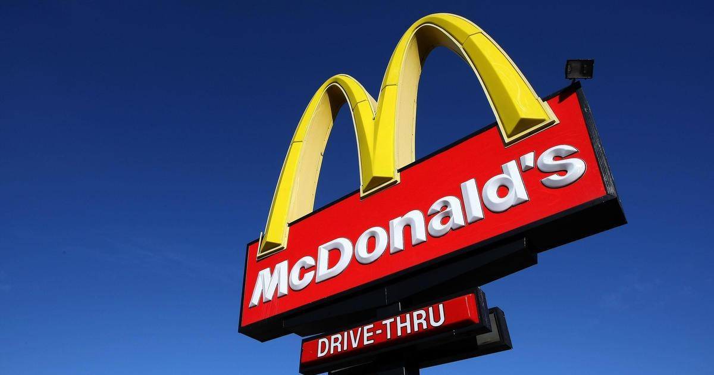

McDonald's franchise in Louisiana and Texas hired minors to work illegally, Labor Department findsA McDonald's franchise that controls 12 restaurants in metro New Orleans violated child labor laws and has hired more than 80 minors in two states, the U.S. Department of Labor said Tuesday. CLB Investments LLC in Metairie employed 72 workers who are 14 and 15 years old — allowing them to work longer and later than federal law permits at 12 restaurants in New Orleans, Kenner, Jefferson and Metairie, the department said. Investigators with the Labor Department's Wage and Hour Division also determined the employer allowed three children to operate manual deep fryers, which is prohibited for employees under age 16. The franchise received a $56,106 civil penalty for the violations, according to the news release. New Orleans Owner/Operator Chris Bardell said he's committed to the safety of his people. "Since learning of these violations, I've introduced mandatory child labor law trainings for my restaurant managers and conducted regular audits to ensure we're in compliance with labor regulations," Bardell said in a statement. The division also found similar violations at four McDonald's locations operated in Texas by Marwen & Son LLC in Cedar Park, Georgetown and Leander. Investigators found that in Texas, the company employed 10 minors, 14- to 15-years-old, to work hours longer shifts than is permitted by law. They also learned the employer allowed seven children to operate a manual fryer and oven, and two of the seven to also operate a trash compactor. Marwen & Son was assessed $21,466 in civil penalties for its violations. "Employers must never jeopardize the safety and well-being of young workers or interfere with their education," explained Wage and Hour Division Regional Administrator Betty Campbell in Dallas. "While learning new skills in the workforce is an important part of growing up, an employer's first obligation is to make sure minor-aged children are protected from potential workplace hazards." These findings follow a May announcement of federal investigations that found three McDonald's franchise operators violating child labor laws, involving more than 300 children, some as young as 10, at 62 locations in four states. "We take this issue seriously and are committed to ensuring our franchisees have the resources they need to maintain compliance with all U.S. labor laws," Tiffanie Boyd, Chief People Officer, McDonald's USA, said in a statement. for more features. |
 |